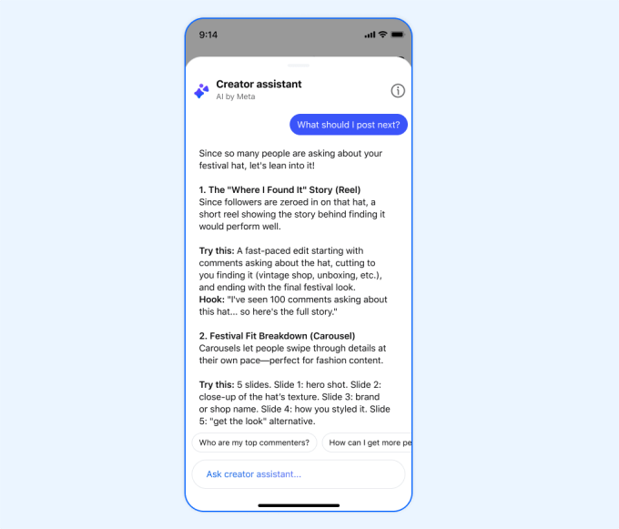

Meta 正式推出 Creator Studio 獨立應用程式，AI 助手提供個人化建議並支援粉絲互動管理

Facebook 宣佈推出獨立 Creator Studio 應用程式，這是一款 AI 驅動的應用，為創作者提供個性化的受眾增長建議，以及與粉絲互動的新工具。iOS 版在數週前測試後正式推出。
| 功能 | 說明 |
|---|---|
| 智能識別 | 自動識別最重要、最需要回覆的留言 |
| 風格草擬 | 以創作者個人風格生成回覆文字 |
| 編輯把關 | 創作者可修改後再發佈，保持控制權 |
| 效率提升 | 大幅減少回覆粉絲留言的時間成本 |
Facebook 開始測試 Creator Studio 獨立應用程式，僅向部分創作者開放
正式向所有 iOS 用戶推出完整功能
持續加入更多 AI 功能，包括影片剪輯建議、標題優化等
打造完整的創作者生態系統，減少對第三方工具依賴
對抗 TikTok、YouTube 的創作者爭奪戰
過去創作者需要仔細查看圖表和儀表板才能了解自己的表現，但有了 AI 助手，他們可以快速獲得「何時發帖」或「粉絲在留言區說什麼」等問題的答案。
— Facebook 官方公告透過 Creator Studio app 強化自家生態系統，一方面對抗 TikTok 和 YouTube 的創作者競爭，另一方面建立閉環的創作者工具鏈，減少對 ChatGPT 等第三方 AI 工具的依賴。隨著 AI 功能深度整合，創作者將更倚賴平台內建工具。